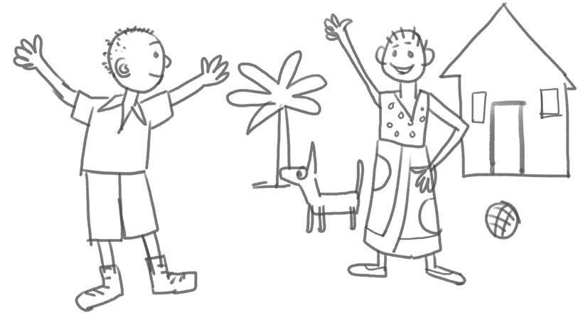

Uchoraji wa picha ni sanaa ya kutengeneza picha kwa kutumia vifaa vya asili au vya kidijitali. Baadhi ya vifaa vya asili ni pamoja na penseli, kalamu za rangi, chaki, brashi, na rangi ya kupaka. Pia, vifaa vya asili vinapatikana kwa njia ya kidijitali.
Kuchora picha kwa kutumia penseli
Kwa anayeanza kujifunza kuchora kwa kutumia penseli huchora kwa uhuru bila kutumia rula au vipimo vyovyote. Kielelezo namba 1 kinaonesha mfano wa picha iliyochorwa kwa uhuru kwa kutumia penseli.

30